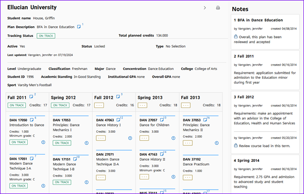

Release 5.1.7
Degree Works 5.1.7 includes new functionality, improves existing functionality, resolves change requests, and more.
For more detailed information about the release, see the Degree Works 5.1.7 and Transfer Equivalency 5.1.7 release records.
General Degree Works Release Information
Overview
The central themes of Release 5.1.7 include expanding the functionality offered in the Responsive Dashboard and Transit to meet the needs of the customer base and enhancements to support Degree Works as a SaaS solution. Release 5.1.7 also meets customer satisfaction goals by delivering nearly 10 improvements and 35 problem resolutions.
This release is a MINOR release so the version has been assigned as Release 5.1.7 and it will build on the baseline established by the previous MAJOR release – Release 5.1.0 – and subsequent releases. This is a significant release in terms of the product direction, and it continues to build on the infrastructure introduced for Cloud delivery.
- 5.1.7.1 (Service Pack 1) – May 21, 2026
- 5.1.7.2 (Service Pack 2) – July 16, 2026
Upgrade path
The Degree Works Release 5.1.7 supports a new installation or a direct upgrade path for existing customers currently on Release 5.1.5 or Release 5.1.6.
| Scenario | Upgrade path |
|---|---|
| I am new to Degree Works. | You can install 5.1.7. |
| I am on 5.1.5 or 5.1.6. | You can upgrade directly to 5.1.7. |
| I am on 5.1.4 or older. | You must be on 5.1.5 or 5.1.6 before you can upgrade to 5.1.7. Depending on your current version, intermediate updates may be necessary. |
If you are on any service pack level, the upgrade path you should follow is from your base release as service packs are included in the next release. For example, if you are on 5.1.6.2 you would follow the path of upgrading from Release 5.1.6 to Release 5.1.7.
Ellucian strongly recommends institutions run on current and supported versions of our software so multiple jumps are not required when processing a new release upgrade.
Release support status
With the release of Release 5.1.7, Release 5.1.6 moves to Maintenance Support, while Release 5.1.5 moves to Sustaining Support. Release 5.1.4 moves to End of Support. Details about Ellucian Support Assurance can be found in article number 000038478.
All Degree Works versions older than Release 5.1.4 are in End of Support. If you are on one of these versions, you must upgrade to at least Release 5.1.5 before you can process Release 5.1.7.
Degree Works releases follow a rolling schedule for support. This means that with each new release, all previous releases will transition to the next support status. For example:
- 5.1.7 is released in March 2026 with an Active status
- 5.1.6 released in September 2025 will move to Maintenance status
- 5.1.5 released in March 2025 will move to Sustaining status
- 5.1.4 released in September 2024 will move to End of Support status
Degree Works hardware and software requirements
Before beginning a new installation or upgrade, be sure to verify that your Degree Works environments meet the hardware and software requirements.
Supported Hardware Architectures
The following hardware architecture and operating system configurations are supported for Degree Works classic and Java application servers:
- Intel-based x86 running Red Hat Enterprise Linux 8.x (64-bit)
- Intel-based x86 running Oracle Linux Server 8.x (64-bit)
- Solaris
- HP-UX
- IBM AIX
On-premises institutions running Solaris, HP-UX, or AIX on their Degree Works classic and Java application servers must migrate to a supported Linux-based operating system before upgrading to Release 5.1.7.
Supported RDBMS
Degree Works Release 5.1.7 supports Oracle 19c.
Supported Ellucian Integrations
Banner customers: You must be on at least Banner Student 8.33.2, which added the common course number to SHRTCKN and SHRTRCE to upgrade to Release 5.1.7. Degree Works processes that pull data from Banner, such as RAD30, BAN62, refreshing from the Dashboard, etc. will fail if you are on an older version of Banner Student.
RabbitMQ
Degree Works Release 5.1.7 has been tested against the following versions:
- RabbitMQ server v3.13.1
- RabbitMQ client v0.14.0
Java
Degree Works Release 5.1.7 requires Oracle Java Development Kit (JDK) or OpenJDK version 17 on both your classic and Java application servers. Do not install this release if your servers are configured for only a prior version of Java. You may have other versions of Java on these servers, but the Degree Works environments need to be able to be configured for Java 17 – the installer will not run if the correct Java version cannot be found, and the Java applications may encounter errors on deployment and during use if a prior version of Java is used.
GCC Compiler
Degree Works Release 5.1.7 requires GCC version 8.x.
Apache FOP
New for Degree Works Release 5.1.7: Apache FOP version 2.11 is required for the generation of PDF audits. Before beginning this update, install Apache FOP version 2.11 on your classic server.
Download Apache FOP 2.11 from this link and upload the file as binary to /usr/local/dw/java (or the location defined by gsCfgJavaLib in dwenv.config) and follow these instructions exactly so that the directory is created to include the version:
cd /usr/local/dw/java
gunzip -c fop-2.11-bin.tar.gz | tar xvf -OpenSSL
Degree Works Release 5.1.7 requires OpenSSL version 1.1.1, including the openssl-devel package.
Supported Browsers
Ellucian makes every effort to test and support the current versions of the following browsers at the time of a release:
- Google Chrome
- Mozilla Firefox
- Apple Safari
- Microsoft Edge
For more information, see Ellucian Global Web Browser Support Policy and Matrix.
Degree Works Enhancements
Accessibility highlights
PE0006644 - Enable accessibility features in the FOP-generated Degree Works PDF audit
Degree Works has been upgraded to Apache FOP version 2.11, enabling enhanced PDF accessibility when generating audits. This update improves compatibility with screen-reading tools such as JAWS, supporting a more accessible experience for users who rely on assistive technologies.
API highlights
- CR-000177795 - Ethos-enablement of Degree Works exception APIs
- PE0006687 - Ethos-enablement of Degree Works Scribe APIs
- PE0006688 - Ethos-enablement of Degree Works note APIs
- PE0006689 - Ethos-enablement of Degree Works petition APIs
Release 5.1.7 delivers Ethos-enablement for Degree Works, starting with the Exceptions, Notes, Petitions, and Scribe APIs. These APIs support core academic decisioning and curriculum workflows and establish the foundation for deeper integration within the Ellucian Ethos ecosystem. These changes enable more seamless collaboration with other Ellucian solutions and approved partners.
Ethos enablement is being delivered incrementally. Future releases will extend support to additional APIs aligned with high-value SaaS use cases, allowing institutions to realize immediate operational benefits while enabling continued modernization and faster innovation over time.
Banner highlights
SEP highlights
CR-000173253 - Display plan notes in Responsive Dashboard (IDEA-70811)
Responsive Dashboard Plans now supports a unified notes view when printing plans. When the plans.print.notesPanel.enabled Shepherd setting is set to true, users can enable a printed plan view that includes an interactive notes panel alongside plan content. This makes notes visible and accessible in the printed output, providing additional context without switching views.

System highlights
PE0007806 - Add Australian English translations to Degree Works
An English Australian version of language properties for Responsive Dashboard, Transit and Controller has been delivered. Users who have their browser's default language configured as English Australian (en-AU) will see the translated version of Degree Works.
Note that this only applies to the user interface text - any data such as course titles and UCX descriptions, or Scribe labels, remarks and ProxyAdvice will not be translated automatically.
To set the baseline language for Properties in Controller to a language other than English, see the localization.internationalization.baseline.language Shepherd setting.
Transit highlights
PE0006098 - Obsolete scripts that were replaced by Transit jobs in the 5.1.6 release
As of version 5.1.7, legacy scripts have been removed and replaced by Transit jobs. This change modernizes processing and aligns execution with current platform standards.
- dapblockload
- dapblockunload
- dapmapload
- dapmapunload
- dapucxload
- dapucxunload
- dapauditstoxmlfiles
- dapfindbadaudits
- dapfindorphanedaudits
- sepshowplan
- sepshowtemplate
Degree Works Updates
Database changes
There are no database changes in Release 5.1.7.
Subtractions
- Ellucian Degree Works support for the following operating systems has ended:
- Solaris
- HP-UX
- IBM AIX
On-premises institutions running Degree Works on Solaris, HP-UX, or AIX must migrate to a supported Linux-based operating system before upgrading to Release 5.1.7.
- Several deprecated Shepherd keys have been obsoleted:
- ADVISIDS (use SDSTUMY instead)
- ANYSTUID (use SDSTUANY instead)
- SDDEPART (use ADFILTER instead)
If you haven’t already switched to the replacement Shepherd keys, Ellucian recommends you start making this change as soon as possible.
- These classic server scripts were moved into Transit jobs have been obsoleted:
- dapblockload (use DAP41 instead)
- dapblockunload (use DAP40 instead)
- dapmapload (use DAP43 instead)
- dapmapunload (use DAP42 instead)
- dapucxload (use DAP45 instead)
- dapucxunload (use DAP44 instead)
- dapauditstoxmlfiles (use DAP26 instead)
- dapfindbadaudits (use SYS05 instead)
- dapfindorphanedaudits (use SYS06 instead)
- sepshowplan (use SYS54 instead)
- sepshowtemplate (use SYS55 instead)
Documentation
The documentation for this release is available on the Ellucian Documentation site. It can be viewed interactively and, if desired, can be exported in total or by topic. A login for the Ellucian Customer Center will be required to access the entire suite of documentation.
You can find Degree Works product documentation in the Customer Center under and selecting Degree Works.
Degree Works API documentation is also available in the Customer Center under .
A small subset of user documentation can be found on the Ellucian Documentation site under the Use category. The Use category is available to all users, including those without a Customer Center login.
Degree Works 5.1.7 Service Pack 1
This patch corrects defects reported with Degree Works Release 5.1.7.
Click Attachments  on the side panel to download the service pack general information and instructions.
on the side panel to download the service pack general information and instructions.